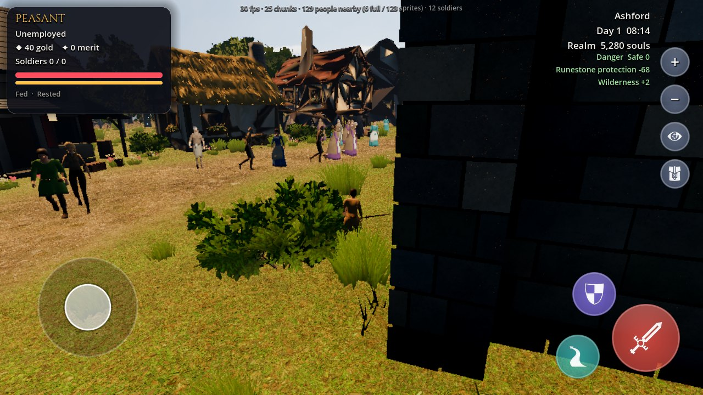
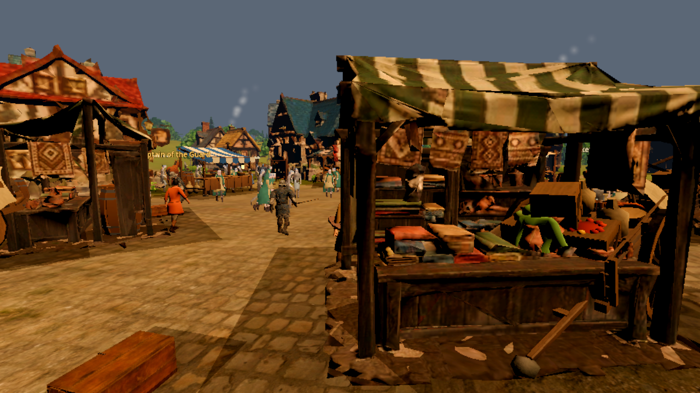

Master sequence
Natural-world implementation plan
Phases collision, near-actor contact, routing, locomotion, daily life, and performance. Each phase has a visible acceptance check.
A visual index for the natural-world plan. Use it to inspect the current evidence, compare system designs, and choose a small gameplay slice with a clear before/after review.
Phases collision, near-actor contact, routing, locomotion, daily life, and performance. Each phase has a visible acceptance check.
Compare fitted building footprints, entrances, facades, props, and the routes that cross them.
Trace where direct targets, sliced simulation updates, missing bodies, and frame-dependent turns can make a resident look glitchy.
Use the active clip QA first. Calibrate body speed to clip travel, then review phase sync and foot contact on compatible rigs.
See how high-priority events interrupt work safely, reserve interaction spots, and let a resident return to a meaningful goal.
Separate hit timing, enemy pressure, player impulse, and floor-contact findings. Models describe a proposal; gameplay captures decide.
These frames identify review targets; they cannot establish smooth movement, collision, or a living routine on their own.


Connected pathgrids, fidelity tiers, and separation of schedule intent from physical movement.
Review what the autoplay run shows and which NPC movement and collision cases still need a live capture.
Improve the existing Godot systems incrementally. Do not import another game's models, maps, animations, or characters.